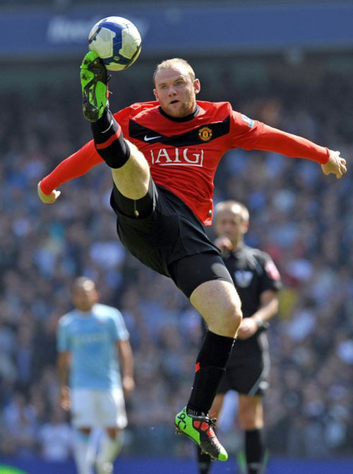

Ở tầng trên của dãy phòng thay đồ, ngay bên cạnh căng tin, văn phòng huấn luyện viên trưởng là tâm điểm của mọi thứ tại Carrington, sân tập của United. Vào buổi ăn trưa của thứ Hai hàng tuần, nếu có ai đó lang thang vào câu lạc bộ mà không xem kết quả của các trận đấu trước đó, họ chỉ cần nhìn vào ngôn ngữ cơ thể của huấn luyện viên trưởng là sẽ biết chính xác United đã thi đấu như thế nào. Ông hồ hởi đi quanh các bàn trong bữa trưa, cách ông ấy biểu đạt với mọi người, tán gẫu, cười đùa (hoặc không tán gẫu, không cười đùa), mọi thứ đều hiện rõ trên khuôn mặt ông.
Nếu trước đó chúng tôi giành chiến thắng, như với Fenerbahçe, ông ấy sẽ cười với tất cả mọi người; ông ấy sẽ nói về trận đấu vừa qua và tỏ ra rất hào hứng cho trận kế tiếp. Nếu chúng tôi đã chơi thật sự tốt, ông sẽ phát ra những câu đùa không gây cười và đố những câu ngớ ngẩn trong lúc chúng tôi ăn trưa và thay đồ.
Ông nói: “Này các chàng trai, hãy kể tên những cầu thủ đã từng vô địch World Cup và đang thi đấu tại Premier League?”

.Ông ấy để chúng tôi đoán già đoán non. Tôi không nghĩ ông ấy thực sự biết đáp án cho phần lớn câu đố được đưa ra. Hoặc nếu thực sự biết thì ông cũng chả bao giờ tiết lộ, dù sau đó chúng tôi có nài nỉ thế nào đi nữa.
Khi huấn luyện viên trưởng có tâm trạng thực sự tốt, đó là lúc những câu chuyện bắt đầu. Ông ấy sẽ không ngừng kể về sự nghiệp thi đấu của mình, những bàn thắng mà ông ghi được khi còn là tiền đạo của Dunfermline và Rangers. Ông ấy kể về lần mình từng chơi bóng với cái lưng bị gãy. Có vẻ như mọi người trong đội đều đã được nghe chuyện ấy - chấn thương đó tệ ra sao, làm thế nào mà ông ấy lại bị thương. Huấn luyện viên trưởng đã kể về “cái lưng gãy” nhiều đến mức chẳng bao lâu tôi cũng có thể nắm được đầu đuôi câu chuyện. Nhưng nó cũng không thể ngăn ông nhắc lại chuyện đó, đặc biệt là khi ông cảm thấy mình cần phải làm rõ về các chấn thương. Điều buồn cười là, dù ông có nói nhiều đến mấy về quãng thời gian thi đấu của mình, tôi vẫn chưa được xem băng hình bất kỳ bàn thắng nào ông ấy từng ghi, nên tôi cũng chẳng biết ông ấy đã từng chơi hay hoặc tệ đến mức nào. Tôi không nghĩ ông ấy chơi hay như những gì mà ông nói đâu!
Trong vài tháng đầu tại câu lạc bộ, tôi nhận ra bầu không khí tại Carrington là tích cực - khi chúng tôi đang giành chiến thắng - tôi có thể đi thẳng vào phòng làm việc của huấn luyện viên trưởng bất cứ lúc nào tôi muốn, chỉ để tán gẫu. Thành thực mà nói, tôi thích đi vào đó. Nơi này là một căn phòng rộng lớn, rộng hơn một số phòng thay đồ mà tôi đã từng vào. Ở đó có một ô cửa sổ lớn hướng ra các sân tập để huấn luyện viên trưởng có thể theo dõi tất cả mọi thứ đang diễn ra.
“Wayne, cánh cửa này luôn mở nếu cậu cần giãi bày điều gì đó với tôi”, ông ấy nói.
Khi tôi bước vào đó lần đầu tiên, ít lâu sau trận ra mắt của mình, chúng tôi có những trao đổi về trận đấu, về những đối thủ tiếp theo và cách mà tôi có thể chơi để khai thác điểm yếu của họ. Chúng tôi nói về cuộc đua vô địch và những cầu thủ xuất sắc nhất tại giải đấu: Chelsea là một đội bóng mạnh trong mắt ông ấy, Arsenal và Liverpool cũng vậy. Ông ấy nói với tôi cách bản thân thấy đội bóng đang được định hình như thế nào, cách tôi và Ronaldo sẽ chơi cùng nhau. Chúng tôi nói chuyện về đua ngựa, ông ấy kể với tôi về bộ sưu tập rượu vang của mình – có vẻ như nhà ông có một hầm rượu rất lớn. Ông ấy không hề nhắc tới chuyện nghỉ hưu, dù bản thân đã ở cái tuổi mà đa số sẽ hài lòng với việc nghỉ ngơi, nhưng có lẽ đó là thước đo bản lĩnh của người đàn ông, với tôi là như vậy.
Tôi cảm thấy mình có thể cười đùa cùng ông ấy khi chúng tôi đang chơi tốt. Thậm chí, tôi còn có thể đoán biết trước đội hình ra sân của trận đấu tới, vài ngày trước khi nó được huấn luyện viên trưởng công bố.
“Ai sẽ là người đá cặp với tôi trên hàng công vậy sếp? Chỉ có mình tôi đá cắm thôi sao?”
Ông ấy cười. “Ồ, vậy cậu nghĩ cậu sẽ được ra sân à? Vậy còn những ai sẽ được ra sân?”
Tôi nêu ra vài cái tên.
“Ừ, thì cậu cũng không sai mấy đâu.”
Khi mùa giải diễn ra, tôi nhận thấy chỉ có duy nhất một lý do khiến mình không thích tới văn phòng của huấn luyện viên trưởng, đó là khi tôi bị gọi lên để gặp ông ấy. Điều đó thường đồng nghĩa với việc ông không hài lòng với những thứ tôi đang làm hoặc không làm, và nó luôn diễn ra sau buổi tập của ngày hôm ấy. Có một cái điện thoại được đặt trong phòng thay đồ. Mỗi khi nó đổ chuông, cả đội đều biết điều gì sẽ xảy ra tiếp theo: lệnh triệu tập của huấn luyện viên trưởng. Ai đó chuẩn bị lãnh đủ rồi.
“Làm ơn, hãy gọi Wayne lên văn phòng của tôi?”
Khi đó là tôi, những gã khác lại phát ra những âm thanh hài hước, như thể tôi sắp gặp rắc rối lớn. Một vài người trong số đó còn lấy hơi, hít thật sâu, hoặc huýt sáo chỉ để chọc tức tôi.
Như cái lần vào tháng 1 năm 2005, khi chúng tôi chuẩn bị gặp Liverpool. Ông ấy gọi điện. Tôi đi vào văn phòng và ngồi lên ghế trường kỷ, ông ấy bảo tôi đang chơi không đủ tốt. Ông nói rằng tôi đang không suy nghĩ thấu đáo khi ở trên sân.
“Cậu phải tập trung nhiều hơn, Wayne”, ông ấy nói. “Tôi muốn cậu làm mọi thứ thật đơn giản. Cậu đang dạt quá nhiều ra biên và tôi muốn cậu hãy ở trong vòng cấm.”
Tôi tranh cãi. Tôi nghĩ đó là một cách nhìn nhận không công bằng về lối chơi của tôi, nhưng tôi ghi nhận lời khuyên ấy và tiếp tục công việc của mình. Tại Anfield, tôi ở trong vòng cấm nhiều nhất có thể, tôi không hề dạt biên. Và rồi tôi đáp lại huấn luyện viên trưởng theo cách tuyệt vời nhất có thể: Tôi ghi bàn thắng định đoạt trận đấu. Có lẽ ngay từ đầu, điều đó đã nằm trong kế hoạch của ông ấy. Có lẽ ông ấy đã muốn khiêu khích tôi.
Sau một thất bại, tâm trạng của huấn luyện viên trưởng có thể khá u ám; ông ấy sẽ không nói chuyện hay cười đùa với các cầu thủ trong vòng vài tuần. Ông vẫn phát biểu trước toàn đội trong các buổi họp, nhưng mọi thứ chỉ dừng lại ở đó. Nếu có ai chạm mặt ông ấy ở sân tập, ông cũng chẳng thèm hé răng. Tôi đã học được khá nhanh rằng, tốt nhất nên tránh xa ông sau một kết quả không tốt. Trong vài tháng đầu tại câu lạc bộ, mỗi lần thấy ông ấy dùng bữa trong căng tin sau một thất bại, tôi sẽ lánh xa. Tôi lấy thức ăn, cúi đầu xuống và đi nhanh nhất có thể về bàn của mình.
Có một ký ức mà tôi không thể quên: Lần đầu tiên tôi chính thức được giới thiệu với huấn luyện viên trưởng là khi tôi ký hợp đồng với United tại Old Trafford vào mùa hè năm 2004. Tôi đã từng nói chuyện với ông ấy một hoặc hai lần khi Everton gặp United – một câu chào xã giao trong đường hầm, nhưng tất cả chỉ có vậy. Ngày mà tôi gia nhập câu lạc bộ, tôi đã gặp ông ấy tại Carrington và tôi đã rất phấn khích.
Ông ấy chở tôi tới Old Trafford và nói về cách tôi sẽ hòa nhập với đội bóng, cũng như cách mà ông ấy muốn tôi thi đấu. Ông kể cho tôi nghe về những người đồng đội mới của mình: tiền vệ cánh Ryan Giggs, những tuyển thủ quốc gia của đội tuyển Anh – Rio Ferdinand, Paul Scholes và Gary Neville; đối tác mới trên hàng công của tôi, Ruud van Nistelrooy – một cỗ máy ghi bàn.
Tôi đã nói về những lần mình chơi bóng tại Old Trafford trong màu áo của Everton, tôi đã cảm thấy choáng ngợp như thế nào trước bầu không khí ở đó. Tôi thậm chí đã từng nói với bố mình rằng: “Con muốn một ngày nào đó sẽ chơi bóng cho họ.”
Đó là một cảm giác thật khó tin. Tôi đã theo dõi ông ấy trên ti vi trong nhiều năm, cùng các cầu thủ như Eric Cantona và David Beckham, nhưng tôi không bao giờ có thể tưởng tượng điều đó sẽ xảy đến với tôi. Sau đó, khi những người ở nhà bắt đầu truyền tai nhau về ngày của tôi, một anh bạn đã gửi cho tôi tin nhắn.
“TRỜI ĐẤT QUỶ THẦN ƠI!!! KHÔNG THỂ TIN NỔI, CẬU ĐƯỢC CHÍNH FERGIE LÀM TÀI XẾ RIÊNG CHỞ ĐI KHẮP NƠI.”
Huấn luyện viên trưởng có vẻ như là một người rất tốt, nhưng ngay ngày hôm sau tôi đã được trải nghiệm tầm ảnh hưởng mang tính huyền thoại của ông ấy. Đó là một buổi chiều đẹp trời, tôi lái xe tới Crocky để gặp gia đình. Trên đường, tôi nhìn thấy mẹ và bố ở bãi đỗ xe của quán pub địa phương. Tôi dừng xe lại chào hỏi. Chúng tôi quyết định vào trong quán để kiếm đồ uống, tôi gọi một cốc soda không đường. Tôi chỉ ở đó khoảng 10 hay 15 phút trước khi trở về nhà, nhưng hôm sau, huấn luyện viên trưởng đã gọi tôi lên phòng làm việc của ông ấy. Lần đầu tiên tôi bị triệu tập.
Ông hỏi: “Wayne, cậu đã làm gì tại quán pub ở Croxteth vào hôm qua?”
Tôi không thể tin nổi chuyện này. Tôi đã không ở đó quá lâu, nhưng đủ để ai đó có thể gọi điện và chỉ điểm. Cho tới bây giờ tôi vẫn không biết ai đã làm việc đó. Dẫu vậy, tôi rời cuộc họp ngày hôm đó và học được một điều: Huấn luyện viên trưởng có tai mắt ở khắp nơi.
Chỉ trong vòng vài tuần, tôi đã biết thêm rất nhiều điều. Ông ấy sở hữu vốn kiến thức tuyệt vời về bóng đá. Khi chúng tôi gặp một đội bóng, ông ấy biết tất cả mọi thứ về đối thủ, ý tôi là tất cả. Nếu một cầu thủ có điểm yếu ở chân phải, ông ấy sẽ biết điều đó. Nếu một hậu vệ biên không giỏi tranh chấp bóng bổng, ông ấy sẽ xác định anh ta là một mục tiêu tiềm năng có thể bị khai thác trong các đợt tấn công. Ông ấy cũng biết về các điểm mạnh của từng cầu thủ ở trong đội hình đối phương. Trước mỗi trận đấu, chúng tôi đều được nhận thông tin về việc ai đảm nhiệm công việc gì và ở khu vực nào. Ông ấy cũng cảnh báo về những cầu thủ mà chúng tôi phải đề cao cảnh giác.
Con mắt luôn để ý tới những tiểu tiết của ông ấy tuyệt hơn bất cứ ai mà tôi đã từng làm việc cùng, nhưng đó là một trong những lý do tại sao tôi đầu quân cho ông. Điều kiện đó và cả sự thật là ông ấy đã giành mọi danh hiệu trong bóng đá:
Premier League.
Cúp FA.
Carling cúp.
Siêu cúp Anh.
Champions League.
Siêu cúp các câu lạc bộ đoạt cúp bóng đá quốc gia châu Âu.
Siêu cúp châu Âu.
Giải vô địch thế giới cấp câu lạc bộ.
Cúp bóng đá liên lục địa.
Bạn không thể tranh cãi với chủ nhân của một tủ danh hiệu như thế.
Tôi ra sân lần đầu tiên cho United trước Boro’ vào tháng 10 và chúng tôi đã nhập cuộc khá tệ. Đến giờ tôi đã học được rằng huấn luyện viên trưởng chỉ kỳ vọng một điều duy nhất mỗi khi chúng tôi ra sân là: chiến thắng.
Sau nửa giờ đồng hồ, chúng tôi bị dẫn trước một bàn và không thể giành được thế trận. Tôi đang thi đấu không tốt và ông ấy đang quát tôi từ khu vực chỉ đạo. Tôi giả vờ như không nghe thấy. Tôi không ngoảnh lại, tôi không muốn bắt gặp ánh nhìn của ông ấy. Tôi biết ông đang hét to, nhưng tôi không tài nào hiểu được ông ấy đang nói gì vì đám đông quá ồn. Tôi chắc chắn không muốn lại gần để nghe rõ những gì ông ấy nói, vì tôi biết nó sẽ rất đáng sợ.
Ông ấy trông vô cùng khủng khiếp ở ngoài đường biên.
Chúng tôi cuối cùng cũng hòa 1-1 trước Boro’ nhưng huấn luyện viên trưởng thì không hề bằng lòng. Đó là trận đấu mà đáng lẽ chúng tôi phải giành chiến thắng. Trong vài tháng đầu ở United, tôi đã nhanh chóng học được là chúng tôi phải tấn công cho tới khi trận đấu kết thúc, bất kể tỷ số có là thế nào đi chăng nữa. Đó là triết lý bóng đá của huấn luyện viên trưởng. Ông ấy nói với chúng tôi rằng ông muốn các cầu thủ phải giữ bóng ở trước mặt mình khi chúng tôi phòng ngự và di chuyển tốc độ khi chúng tôi tấn công. Ông ấy muốn chúng tôi dẫn dụ đối phương, khiến họ rơi vào trạng thái an toàn giả. Ông nói với chúng tôi: “Đấy là lúc họ bắt đầu chuyền bóng cho nhau, gia tăng sự tự tin. Nhưng đó chỉ là một cái bẫy.”
Đấy là lúc chúng tôi phải giành lại bóng và trừng phạt họ với những đường chuyền nhanh qua khu vực giữa sân. “Đối phương sẽ không có cửa để kháng cự”, ông ấy nói.
Bóng cần phải được hướng ra biên và rồi đưa vào trong vòng cấm cho tôi và Ruud. Vai trò của tôi là di chuyển ra phía sau hàng phòng ngự. Khi bóng đến chân tôi ở những vị trí sâu hơn trên sân, tôi có nhiệm vụ giữ lấy nó và kết nối với các cầu thủ khác, như Ronaldo. Khi bóng được đưa ra biên, tôi phải lập tức xâm nhập vòng cấm và nhận những quả tạt.
Nếu chúng tôi chơi tốt, Carrington là một nơi hạnh phúc. Sau Fenerbahçe, huấn luyện viên trưởng cho phép chúng tôi tận hưởng buổi tập của mình. Chúng tôi xem băng hình về tất cả những gì đội đã làm tốt trong trận đấu và ông ấy bảo chúng tôi hãy tiếp tục chơi theo cách đó. Ông muốn chúng tôi duy trì đà chiến thắng. Nếu chúng tôi có thể làm được điều đó, căng tin sẽ là một nơi hạnh phúc hơn cho tất cả mọi người.